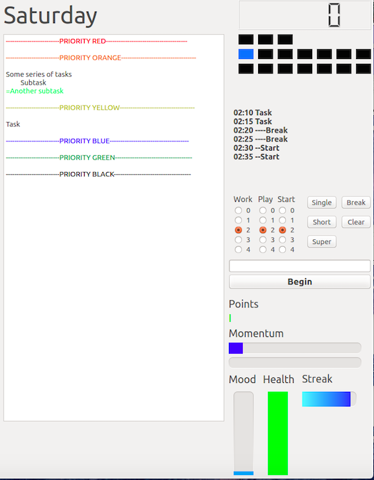
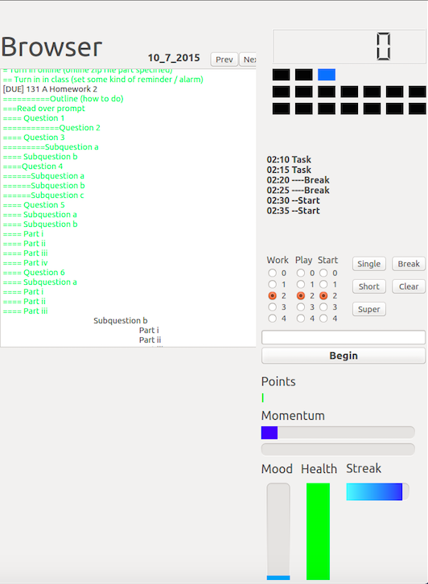
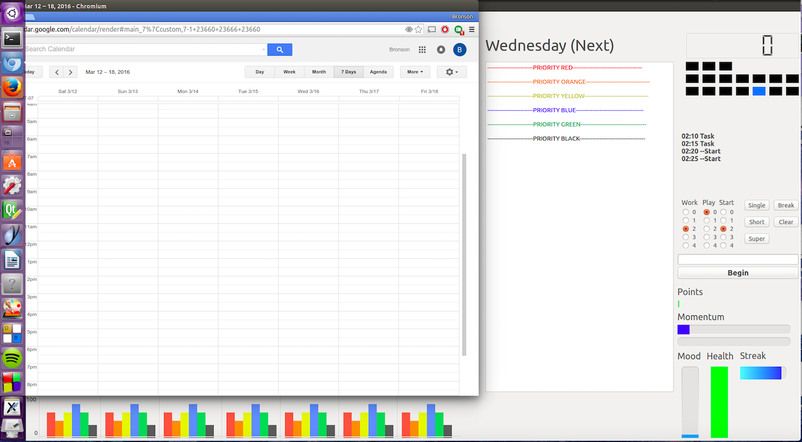

IAM: The Current Iteration
Making it user friendly
Behold, the current iteration. Uses QT to allow some fairly robust UI features like workspaces and autosaving as well as significant gamification.
Gamification
- '=' sign causes tasks to be marked as complete, points and momentum will be instantly updated. Line is reformatted in HTML
- 'Mood' bar updates based on how many tasks completed today.
- 'Health' bar updates based on the last task complete. Depletes over time.
- 'Streak' acts as a multiplier for points when tasks are completeled in quick succession

Navigation
- Changing workspaces (blue box in top left) using arrow keys and alt key automatically saves all text editors.
- Pressing 'Begin' will automatically generate a schedule by selecting a random task from today.
- Browser displays the text file of the first day in the past that has at least one incomplete task.
- Browser allows browsing text files for past and future dates

Currently Adding
- PyQt WebBrowser for Google Calendar
- Automatically graphing next 7 days (in terms of number of different priority tasks) below google calendar.
